Rebble Hackathon-002 - Pebball!
If you haven’t heard yet, the Pebble Smartwatch is back! Well truthfully it was always here, but now we’ll be getting new Pebble hardware. There are few comeback stories as amazing as the Pebble Smartwatch. But once again, it just goes to show: when you’re good, you’re good.
After the announcement of the Pebble smartwatch returning, the energy was kept up with the announcement of the second Rebble Hackathon. It was official, the Rebble Hackathon #002 would signal the return of the #001 Smartwatch.
The Hackathon (002)#
The rules for this hackathon were similar to the last one, with one major change: last year the hackathon was only for one weekend. This time the event was expanded to one week! Feeling motivated with what I was able to accomplish just on my own last year, I knew I had to challenge myself with the additional time given this year. And this time, I couldn’t do it alone…
The Team#
With the plans I had, it was obvious I needed to recruit an elite team of engineers. Luckily, my workplace is full of them. So with some persuasion, and the promise of cool hackathon stickers, I was able to form the following team:
- Taylor (me) - Watchapp developer
- Jeremy - Game Server developer and UI
- Dylan - Watchapp Accelerometer algorithm designer
- TJ - Game tester and professional baseball player
With our abilities combined, we became the Pebballers.
Conceptualization#
Like last time, I wanted to create a list of technologies and concepts to align our project with. Since we had the additional time this year, I decided I wanted to play around with another feature of the Pebble that I always found neat: the Accelerometer.
I believe the ability to access the accelerometer on a wearable like this allows you to achieve experiences that become very intimate and personal to the user. For example, a health app that tracks a users steps without any required interaction. I have always found the concept of physically interacting with your technology to be so neat. There is truly no better innately understood controller like someone’s own body. Being able to create a controller that is already attached to you removes a non-organic layer from any interactive experience that one can often feel when having to interact with a screen.
Therefore for this hackathon project, I would challenge myself and the team to incorporate the following:
- a self-hostable solution
- combination of multiple technology platforms to create a single comprehensive interface
- utilize the Pebble accelerometer to create a motion-based interactive experience with controls that would be easy to pickup by any user
Inspiration#
With the basic idea of using the Pebble as a motion-based game controller, we genuinely had no intensions of creating another entry with the theme of “take a concept from the Nintendo Wii, and put it on the Pebble”, but here we are. Our original concept actually took inspiration from arcade rhythm games, specifically Taiko no Tatsujin or the Donkey Kong bongos. The basic idea is there would be two “notes” you could hit, with the player either hitting the beat with their arm “palm up” or their arm “palm down” on a table. In practice, it would like similar to a pat-a-cake-like game. Maybe one day we’ll revisit this idea, so no one steal it because we already called dibs…
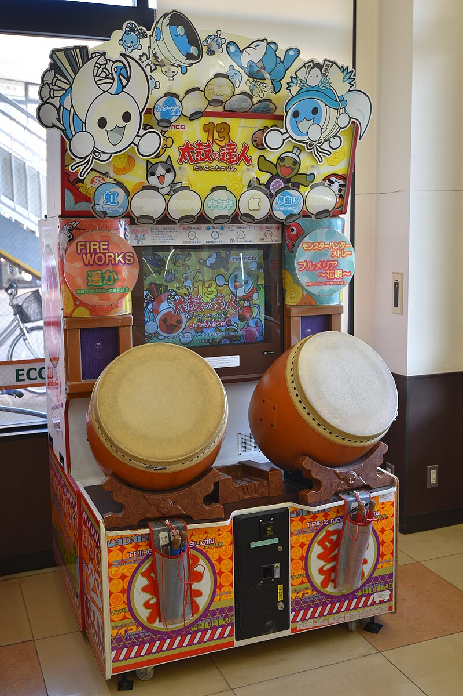
Taiko no Tatsujin 13 - Source: https://commons.wikimedia.org/w/index.php?curid=88898667Out of concern for time and complexity, we ultimately decided to go with a more simple concept and landed on a baseball endless batting cage experience. Like the palm up and down motions, we would use two events commonly found in baseball: the batter’s stance and a swing. These motions would be obvious and unique enough to easily capture with the Pebble’s accelerometer.
Outlining#
Designing the Game#
Once we simplified the concept down to an endless baseball batting cage experience, we begun to brainstorm how the game would work. But first, how did we determine in my earlier statement that baseball would be easier? Again, our project goal centered around the idea to create an motion-based interactive experience where the Pebble was ultimately just being used as a controller for the game being played. We determined we could achieve this using the Pebble’s accelerometer a la faux Wii Remote. While the Pebble’s accelerometer is great, the data capture API is limited and the pull on the battery would be large if we were doing some advanced analysis on the Watchapp. We figured baseball was as simple as you could get when it came to using the accelerometer. Because truthfully, you just need to determine if someone’s arm was still and moving during a swing.
We realized early on that this concept would require a lot of communication to the user due to the coordination of events. This would be difficult to achieve on the Pebble alone, especially if it was already acting as the game’s controller as you would be repeatedly swinging your arms around. We determined we could take advantage of a second screen that would almost be guaranteed to be paired with someone using a Pebble, their phone. We would have the user prop up their phone, tablet, or computer and use it purely as a display device, with all controls and instructions being initiated by the Pebble. We ended up referring to the phone display companion as the Game Server.
With this dual paired device concept in mind, our last concern became the latency between the Pebble and the user’s phone. A local Bluetooth connection between watch and phone app would be best, but designing and publishing a phone app (especially on iOS) sounded too complicated even with a week. Instead we chose to use a website to make the companion display platform agnostic.
Making it So#
Now that we had our vision, it was time to start the work. We started by creating two simple flow diagrams on paper of what the user experience would look like. One that outlined the program events and one that outlined the interface of the two components:
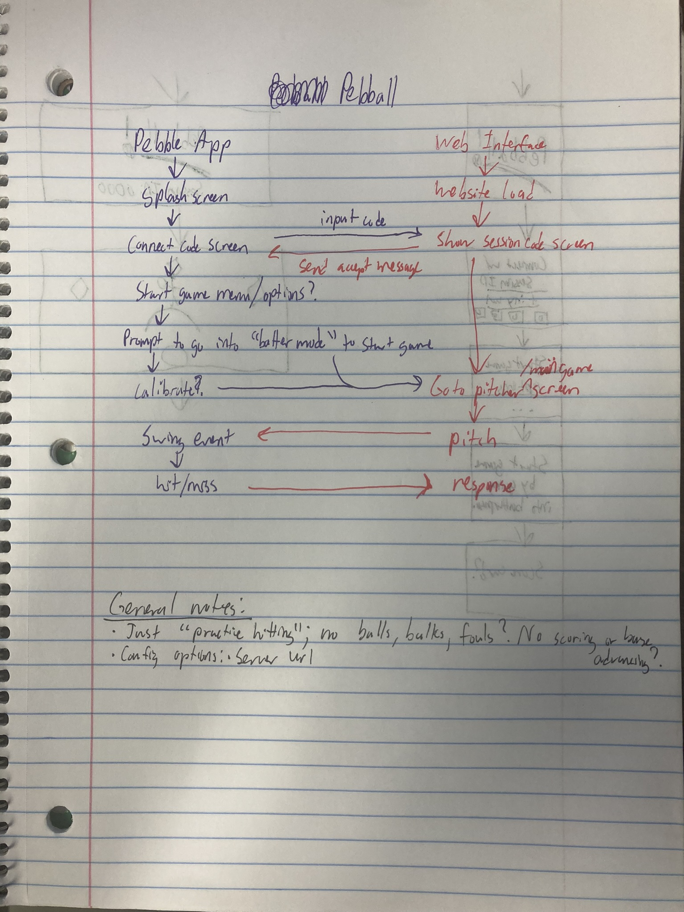
Outline of Pebball! Watchapp events (left) interacting with the Game Server (right)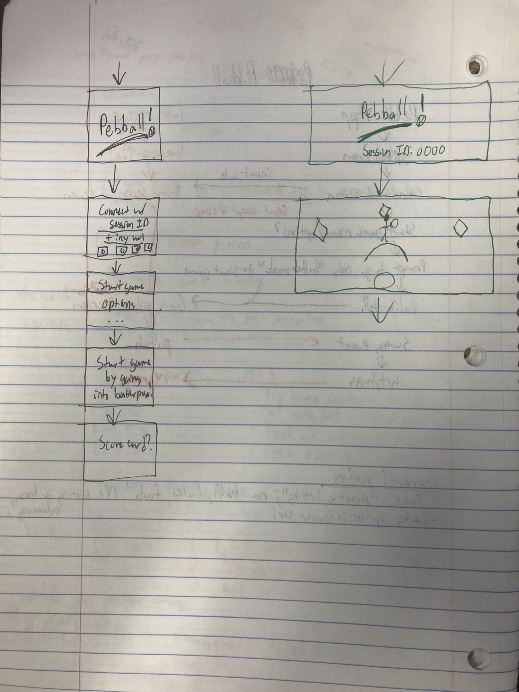
Outline of Pebball! Watchapp (left) and Game Server (right) interfaceYou can see from my notes that like last year’s submission, this Watchapp is tightly coupled with the Game Server. Game Server authentication and communication would be required in order to advance through the windows of the Watchapp. Unlike last year, we would need to employ a different web communication technology. Because the Watchapp and Game Server would need to communicate bidirectionally with low latency, Websockets were used.
Event Diagram Walkthrough#
First, the user would be greeted with the Pebball! splashscreen. From there, the Watchapp would advance to the Session ID Input Window which would require a three digit code served by the Pebball! Game Server. We did this less for security, and moreso for the ability for multiple game instances to run on a single Game Server at once without collisions.
Once the code is put in, the Websocket connection would be initialized with the three digit Session ID being used to route the Watchapp to the correct event queue. Essentially, all traffic from the watch would be directed to a unique “room” on the web server like Jackbox or Kahoot! Once the connection is verified, the Watachapp is allowed to advance to the game menu where the Watchapp initiates a game start. We would also use this game menu to allow the user to configure parameters for the game. In the end we only used this for telling the game which wrist the user had their Pebble on for calibration purposes.
When a user would initiate a game start event through the Watchapp, a message would be sent to the Game Server telling it to advance to the game interface. From there, the Watchapp would prompt the user to get into a batting stance to calibrate the accelerometer and send the Game Server an event that the user is ready for the next pitch. The batting stance was our “speed bump” that we designed. It was a guaranteed unique position we could use that would be difficult to confuse for another motion. From there the Game Server would send a pitch event to the Watchapp where after a random amount of time, the Pebble would vibrate hinting to the user to swing their bat. If the user swings their arm fast enough, it’ll count as a hit. If they wait too long, it’ll count as a miss. The count of both hits and misses are kept by the Watchapp which displays the information after each swing.
Then the user is prompted to get back into a batting stance and the entire process is endlessly repeated until they chose to end the game. All event messages were timestamped on the device the event originated from, allowing the game to still be accurate-ish enough even in high latency situations.
We even came up with a fun logo for the game, but this never made it into the final product. So here’s an exclusive behind the scenes look at what could of been:
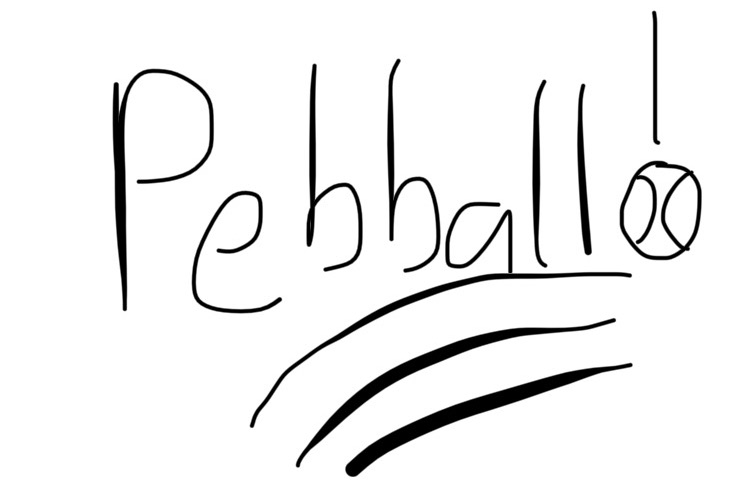
The Pebball! logo that never was...Implementation - Ideas in Motion#
Creating the back-end#
Watchapp#
The core principle of the entire concept was of course the motion controls. So it should come as no surprise it’s what we spent the most time on. At first, we tried to take a straight forward approach: I created a simple Watchapp that repeatedly took quarter second samples of the accelerometer’s X, Y, and Z axis. While these samples were being collected, we would simulate hitting a baseball by swinging an invisible bat. A log of the X, Y, and Z axis during our swings would get printed out for analysis and we would try to find a pattern.
 Pebble Accelerometer Axis Reference Diagram
Pebble Accelerometer Axis Reference Diagram
From there, we implemented the results of our samples into the Pebball! app pretty literally and were met with some success. I was able to take recordings of my batting stance and have the Watchapp correctly identify them as “batter ready” event. However we ran into our first problem when the rest of the team went to try. For some reason the Watchapp wouldn’t recognize their batting stance, so the pitch would never be thrown. This is when I quickly learned that not everyone holds a baseball bat the same way, especially an imaginary one. The subtle difference that seemed to trip things up the most was how much of an angle someone would hold their bat at. In our previously collected samples, I held mine sharply at a 90 degree angle while others would be more relaxed with their stance. This was a problem as I had calibrated the event to closely match my actions, causing the “batter ready” event to never trigger when other people used the bat.
This had us back to the drawing board for a bit, trying to design a one-size algorithm that would fit everyone. That’s when we realized we were thinking way too hard. For anyone with any batting stance, there’s going to be a large X, Y, and Z change going from resting to arms up, so just detect that. We went back to our sample data and confirmed in everyone’s stance there was a large X change, with a smaller Y and Z change. This discovery is how we decided on our final algorithm:
- A left handed batter ready event consists of 10 consecutive samples of a largely negative X axis, and a small positive Y and Z axis.
- A right handed batter ready event consists of 10 consecutive samples of a largely positive X axis, and a small positive Y and Z axis.
The swing event was much more straight forward:
- A left handed swing event is a large jump of the X axis in the positive direction.
- A right handed swing event is a large jump of the X axis in the negative direction.
Game Server#
Like I stated earlier, our project this time required live, bidirectional communication so Websockets were chosen. The protocol we designed is a simple JSON based message that used unique event numbers in the header to identify the message type. The event numbers would match the lookup table used in the Wacthapp’s AppMessage inbox.
Because I was working with a team this year, the API had to be more written and formalized. We created a shared document to keep track of the events that were added throughout development. I’ve included a static link to this document here.
Creating the front-end#
Watchapp#
Because graphic design is not my passion, the final design of the Watchapp was purely functional and less visual. Due to time constraints and a lack of artistic vision, I even kept the color scheme to just black and white in the end. With the only color appearing in the background of the splashscreen.
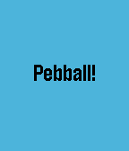
Pebball! Watchapp splash screenThe most important window design was the Session ID input window for pairing with the Game Server. This was inspired and adapted by the PIN entry menu example found in Pebble’s ui-patterns repo. You use the up and down arrows to advance the 0-9 numbers accordingly and the select and back buttons to advance the selected box forward or back.
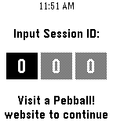
Session ID input window to connect to a Game ServerFrom there the app interface was simple, consisting of a SimpleMenuLayer that allowed you to set your wrist placement or tell the game server to start the game. The wrist placement selection would determine which “batter ready” and swing algorithm was used. The selection persists through different app launches.
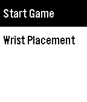
Main menu window allowing you to Start Game or change Wrist PlacementOnce in the game, the Watchapp would endlessly cycle through two windows: the batting stance calibration window and the window screen. The batting stance calibration screen would inform the user to get into position to have the ball thrown. The score screen would show after a pitch and swing event. Since the user would have their eyes off the screen the entire time, we used unique vibration patterns to signal where the user was (calibration or score).
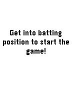
Batting position calibration prompt window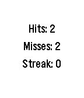
Score shown after pitch from Game ServerOn the later Pebble watches, you could more finely tune the vibration motor so I attempted to play the first few notes of “Take me out to the Ballgame” when you first started the game. In the end I ditched this idea because you had to know what I was going for to even remotely understand why your wrist randomly freaked out when you pressed start.
Game Server#
Part of the reason we utilized Websockets vs Ajax requests was for the goal to provide some interactivity with the web page. This could include detailed elements like aligning the batter HUD with the positioning of the user’s actual wrist. Again due to time, we landed on a more stylized and static design focusing on the pitcher’s actions.
The front-end was written with Vite as that’s the tool the team was most comfortable with.
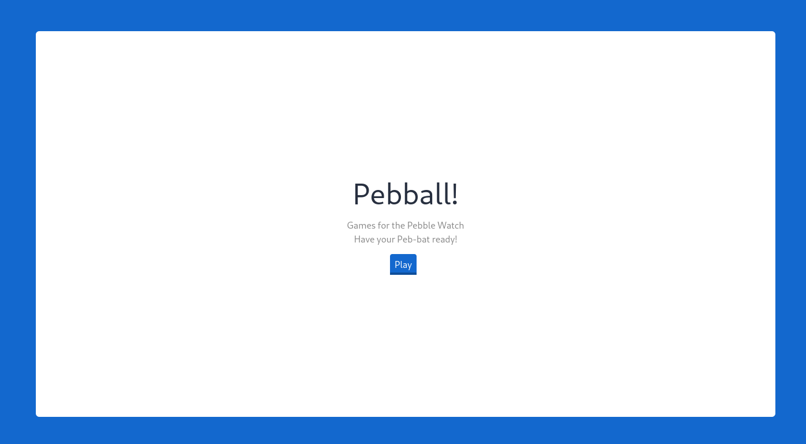
Pebball! Game Server Home Page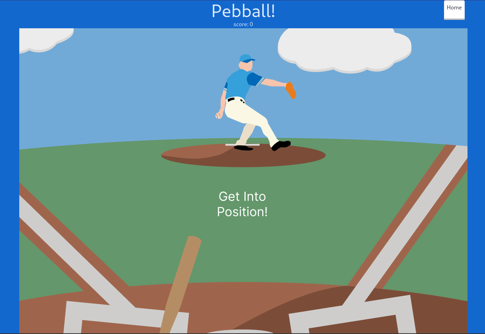
'Get Into Position!' calibration screen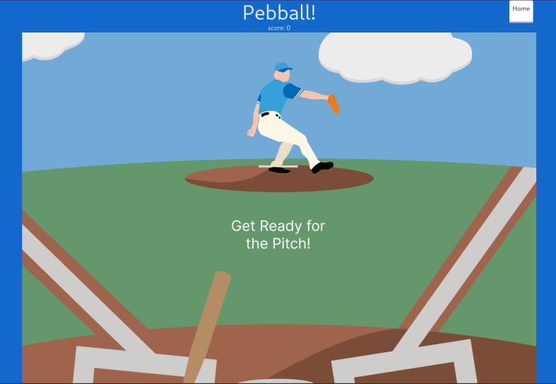
'Get Rady for the Pitch!' Screen shown when the ball is about to be thrown to the WatchappPutting it all together#
Testing#
Testing this year’s entry was much more complicated for two reasons:
- The tech stack was a lot more complicated and used frameworks with more involved compilation processes.
- The codebase had to be portable for all teams to be able to test their part of the project against the other.
Both of these challenges encouraged the use of reproducible builds using Docker. With this design, both teams were able to checkout the latest commit from the other team’s repository and check their half against the other’s.
Truthfully when using this system, there was never a lot of collaborative testing between the Watchapp and Game Server teams before deployment. Both ends were easy to evaluate the other half’s on their own and communication was easy to simulate.
Deployment#
Making it Self Hostable#
One of the worst things about live services is the inevitable fact that they will be shut down and lost forever. In our case, when you have a project like this that’s so reliant on the Game Server, if there’s no Game Server you can’t even get past the Session ID Input Window.
This was my one regret from last year when publishing Rock the Vote. During the week of the Hackathon, engagement was at its highest with a good handful of people continuing to Rock the Vote. But as the weeks went on, less and less people participated until eventually the game was officially dead. For this reason, I decided to stop hosting the server and now the game is officially lost to the sands of time and the entry on the Pebble Appstore has officially become abandonware spam.
We didn’t want that to happen to this entry, especially since this was a solo experience that didn’t require community engagement. So we implemented two important features in this year’s entry that we were able to recycle and refine from our testing needs:
First on the Watchapp, I added the ability to configure the Game Server’s URL using the App Configuration menu in the Pebble App. From there, we also published our Dockerfile used during testing for the Game Server that allows anyone to build a Docker image that builds and hosts the Game Server. Connecting these two pieces together allows you to have a functional game without me needing to provide a public Game Server. It’s a win-win 🤝
Instructions for self hosting can be found in the README on the pebball-web repository linked in the Project Sources below.
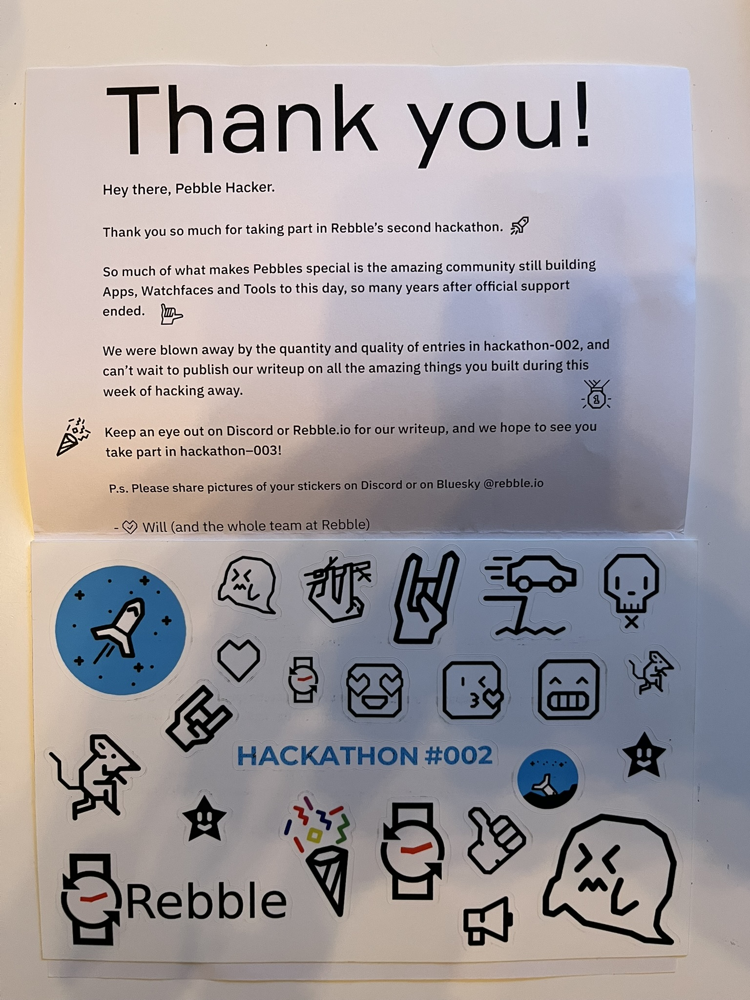
This year we got a whole sheet of stickers, now that’s next level! To make good on my promise, everyone on the team got to choose the stickers they wanted as payment. Luckily I was able to claim the car going over the cliff one for myself. It just speaks to me…
Like last time, I’d describe this hackathon as a success. I’m proud that I was able to proportionally challenge myself with the increased time that was given this year. Having a team was great, and it was great to introduce more people to the Pebble ecosystem and technology.
And of course, again, my favorite part of the whole event was seeing the absolutely mind blowing things the community was able to make. It’s incredibly fun to see the new threads being created and the conversations going on in them!